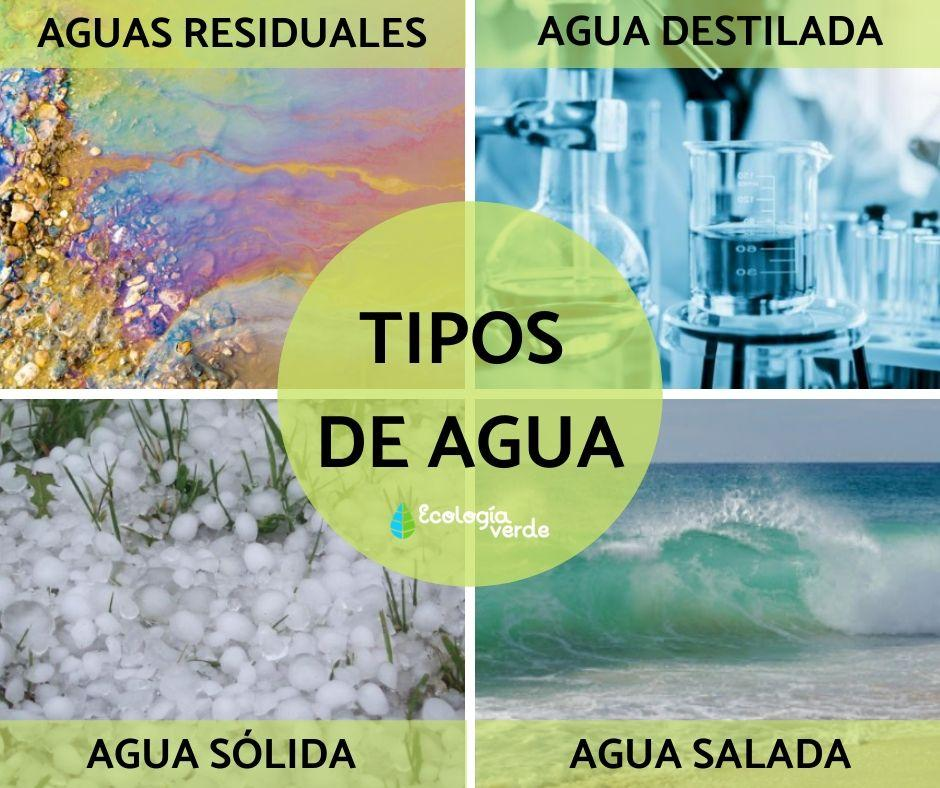

TIPOS DE AGUA
Agua Potable
El agua potable es el agua apta para el consumo humano, que tras un tratamiento adecuado, puede ser consumida sin que exista peligro para la salud. Es limpia, transparente, sin olores o sabores desagradables y está libre de contaminantes. Este tratamiento incluye procesos como la filtración, la desinfección y la eliminación de contaminantes químicos y biológicos para garantizar su seguridad.
Agua Dulce
El agua dulce es aquella que se encuentra naturalmente en la superficie de la Tierra en capas de hielo, humedales, lagunas, lagos, ríos y arroyos, y bajo la superficie como agua subterránea en acuíferos y corrientes bajo tierra. Se caracteriza generalmente por tener una baja concentración de sales y sólidos disueltos, generalmente menos de 1.000 mg/l de sales disueltas.
Agua Salada
También se denomina agua de mar, siendo la que se encuentra en los océanos y los mares de la Tierra. Se caracteriza por tener una concentración de sales minerales disueltas en torno al 35%, compuestas principalmente por cloruro de sodio, sulfato de magnesio y bicarbonato de calcio. Esta composición varía ligeramente en función de factores como la ubicación geográfica y la profundidad.
Agua Salobre
El agua salobre es agua con una salinidad entre el agua dulce y el agua de mar. La salinidad del agua salobre no es condición definida con precisión y se considera que puede abarcar una gran variedad de regímenes de salinidad. El agua salobre puede contener entre 0,5 y 30 gramos de sal por litro, y se encuentra comúnmente en estuarios y marismas, donde el agua dulce se mezcla con el agua de mar.
Agua Dura
El agua dura es aquella que contiene un alto nivel de minerales disueltos, en particular, sales de magnesio y calcio. En química, también se denomina agua calcárea. Esta característica puede influir en la formación de depósitos de cal en tuberías y sistemas de calentamiento, y afectar la eficacia de jabones y detergentes. La dureza se mide en grados alemanes (°dH), donde el agua se considera dura a partir de 8,4 °dH.
Aguas Residuales
Las aguas residuales son cualquier tipo de agua cuya calidad está afectada negativamente por la influencia antropogénica. Según la FAO, se trata de agua que no tiene valor inmediato para el fin para el que se utilizó ni para el propósito para el que se produjo debido a su calidad, cantidad o al momento en que se dispone de ella. Estas aguas requieren tratamiento antes de su reutilización o vertido al medio ambiente para evitar la contaminación.
Aguas negras
Dentro de las aguas usadas, las aguas negras son aquellas que están contaminadas con heces u orina. Son un subtipo de aguas residuales y representan un riesgo significativo para la salud y el medio ambiente debido a su alta carga de patógenos y contaminantes orgánicos.
Aguas Grises
Las aguas grises son las aguas resultantes del uso doméstico. Tienen mucho menos nitrógeno y fósforo que las aguas negras y están compuestas por materia orgánica e inorgánica y microorganismos. Deben su nombre a su aspecto turbio y su condición de estar entre el agua dulce y potable y aguas residuales. Son generadas por actividades como el lavado de ropa, la ducha y el lavado de platos, y pueden ser reutilizadas para riego y otros usos no potables tras un tratamiento adecuado.
Agua Mineral
Es agua que contiene minerales u otras sustancias disueltas que le confieren valores terapéuticos o alteran su sabor. A menudo se extrae de manantiales o fuentes subterráneas.
